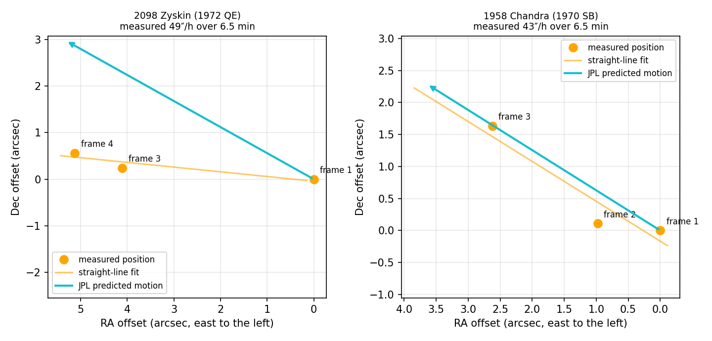

FindingWhat Moves
Stars stay put. Asteroids drift across the sky in minutes. A distant Planet X would crawl over months. We searched NASA's SPHEREx infrared images for anything that moves.
A square of sky three moons wide
SPHEREx is a NASA telescope that maps the entire sky in infrared light. We took one small square of its survey and looked at it four times in a row, a minute and a half apart.
Find every dot
In each of the four frames, we mark every spot of light that stands clearly above the background noise.
Remove what stays still
Stars and galaxies sit in the same spot in every frame. Anything that never moves gets crossed off.
Connect the movers
What's left is joined frame to frame. A real asteroid traces a straight line at a steady speed. Random noise rarely does.
Nine dots that refused to sit still
Each glowing point is something our pipeline caught moving. Its tail shows where it is heading. Hover over a dot to see it, or tap to read its story.
Tails show how far each object travels in the chosen number of hours at its measured speed. Real motion over our 6.5 minutes is too small to see at this zoom. Faint background dots are decoration.
Two asteroids, caught in the act
In 1930, Clyde Tombaugh found Pluto by flipping quickly between two photos of the same sky. Anything that jumps is moving. Our pipeline does the same thing, and these two hits match asteroids already in NASA's catalogue, which tells us the method works.

Too slow for minutes. Try six months.
A planet far beyond Neptune barely moves in an hour. So we compared the same sky in June and again in December, when Earth's own trip around the Sun makes a distant world appear to shift.
Steady in June
It must show up in all three June visits, in the same spot, well above the noise.
Gone in December
By December it must have left that spot. Stars never leave, so this rules them out.
Found nearby
It should reappear 0.1° to 0.4° away, with a brightness between ⅓× and 3× of its June self.
No Planet X here, down to magnitude 17.
That limit is about 25,000 times fainter than the dimmest star you can see with your eyes on a dark night. A clear "no" with a measured limit is a real result: it tells the next search where not to look.